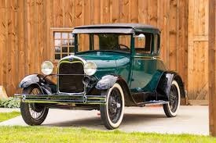
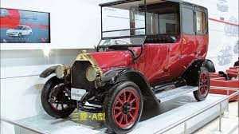
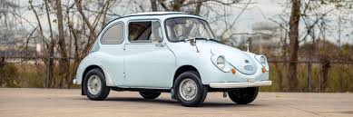
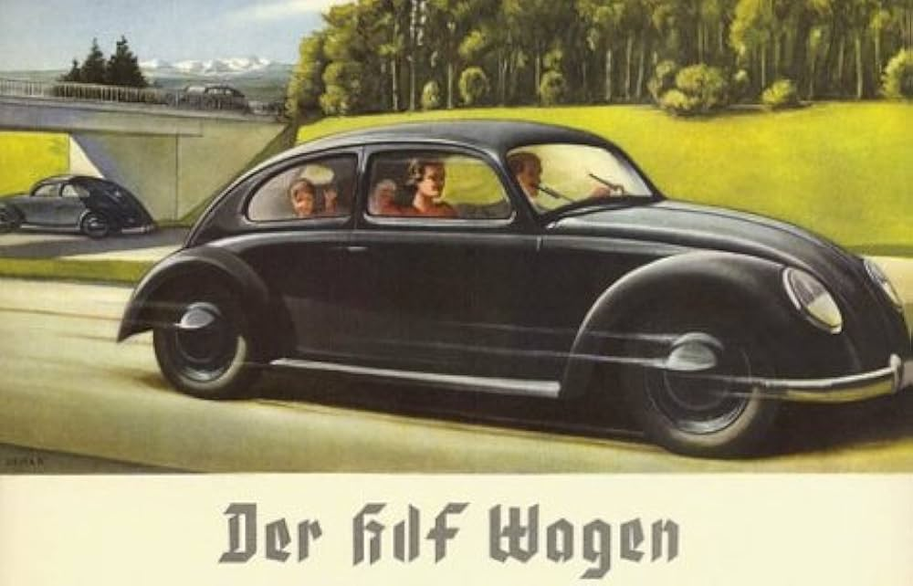

Ford Motor Company fue fundada oficialmente el 16 de junio de 1903 por Henry Ford y 11 inversores en Detroit, Michigan, con un capital inicial de $28,000. Su visión era transformar el automóvil de un lujo exclusivo para ricos a un medio de transporte accesible para el público general
El primer invento: Tras años de interés por la mecánica, Henry Ford ensambló su primer vehículo a motor en 1896 en el patio de su casa, el cual fue bautizado como el "Cuadriciclo"
La Revolución del Modelo T: En octubre de 1908, la marca lanzó el icónico Ford Modelo T. Era un vehículo resistente, fácil de conducir, apto para diversos caminos y, lo más importante, asequible para la clase media estadounidense

La producción en masa: Para satisfacer la inmensa demanda del Modelo T y reducir aún más los costos, Ford implementó la primera cadena de montaje móvil en 1913 en su planta de Highland Park, Míchigan. Esto redujo drásticamente el tiempo de fabricación y cambió para siempre la historia industrial del mundo
En el Japón de 1870, que recién emergía de siglos de aislamiento feudal, el joven Yataro Iwasaki vio una oportunidad para modernizar la nación. Su compañía naviera creció con gran rapidez. Tras el fallecimiento de Yataro en 1885, su hermano y su hijo tomaron las riendas, expandiendo el negocio hacia nuevas áreas estratégicas y transformándolo en uno de los grupos empresariales más poderosos del país
Los Orígenes en el MarEn el Japón de 1870, que recién emergía de siglos de aislamiento feudal, el joven Yataro Iwasaki vio una oportunidad para modernizar la nación. Su compañía naviera creció con gran rapidez. Tras el fallecimiento de Yataro en 1885, su hermano y su hijo tomaron las riendas, expandiendo el negocio hacia nuevas áreas estratégicas y transformándolo en uno de los grupos empresariales más poderosos del país.
A lo largo del siglo XIX y principios del XX, el consorcio creció y se dividió en múltiples entidades independientes que operan en diferentes sectores
Aunque la marca es mundialmente famosa por sus vehículos, la división automotriz comenzó mucho después de la fundación de la empresa.

Hoy en día, Mitsubishi no solo fabrica autos, sino que ha diversificado su tecnología hasta involucrarse en la industria química, reactores nucleares, aire acondicionado y tecnología aeroespacial.
Subaru nació en 1953 como la división automotriz del conglomerado aeronáutico japonés Fuji Heavy Industries (FHI). Su nombre en japonés significa "unir" y hace referencia a la constelación de las Pléyades (las seis estrellas de su logo representan a las empresas originales que formaron el grupo).
Los orígenes de la compañía matriz se remontan a 1917, cuando Chikuhei Nakajima fundó el Laboratorio de Investigación de Aeronaves. Durante décadas, esta empresa fue uno de los fabricantes de aviones más importantes de Japón. Al finalizar la Segunda Guerra Mundial, la compañía tuvo que reinventarse y diversificar sus negocios debido a la prohibición de fabricar aviones militares
En 1953, FHI se fundó oficialmente y comenzó a buscar formas de motorizar a Japón. En 1958, lanzaron el Subaru 360, un vehículo pequeño, asequible y económico que encajaba perfectamente en la categoría gubernamental de los Kei Cars (autos diseñados para la clase trabajadora de la posguerra). Apodado cariñosamente como "Mariquita", fue un éxito rotundo

Con el paso de los años, Subaru consolidó su identidad técnica con dos elementos que se convirtieron en su sello distintivo
Esta ingeniería demostró ser tan resistente que llevó a la marca a dominar el Campeonato Mundial de Rally (WRC) en los años 90 con el icónico Subaru Impreza WRX, creando una legión de fanáticos leales en todo el mundo.
La historia de Volkswagen (que en alemán significa "auto del pueblo") comenzó en 1934 cuando Adolf Hitler encargó al ingeniero Ferdinand Porsche el diseño de un automóvil económico y accesible para la mayoría de los alemanes. De este proyecto nació el legendario Volkswagen Escarabajo
Hitler quería motorizar a la sociedad alemana y solicitó un vehículo sencillo, capaz de transportar a dos adultos y tres niños a una velocidad de hasta 100 km/h, por un precio no mayor a 1,000 marcos. Ferdinand Porsche tomó el encargo y desarrolló el concepto original. El diseño final fue bautizado inicialmente como KdF-Wagen (Kraft durch Freude, o "Fuerza a través de la alegría")

En mayo de 1937, el Frente Alemán del Trabajo (una organización nazi) fundó oficialmente la empresa automotriz. La construcción de la planta principal comenzó en la ciudad de Fallersleben, región que más tarde se conocería como Wolfsburgo, donde aún hoy se encuentra la sede central de la compañía
Antes de que el "auto del pueblo" pudiera llegar a manos de los ciudadanos, estalló la Segunda Guerra Mundial. La fábrica dejó de lado el proyecto civil y se dedicó a producir vehículos militares, como el Kübelwagen (el equivalente alemán al Jeep) y el Schwimmwagen (un vehículo anfibio). Durante esta etapa, la planta utilizó de forma forzada a prisioneros de guerra y trabajadores esclavos
Al terminar la guerra, la fábrica quedó en ruinas y bajo el control de las fuerzas británicas. El oficial del ejército británico Ivan Hirst vio el potencial del vehículo y reinició la producción de la planta en diciembre de 1945, fabricando los primeros Escarabajos para uso civil. En 1948, el control de la compañía fue devuelto a Alemania
En la década de 1950, el Escarabajo se convirtió en un éxito rotundo tanto en Europa como en el resto del mundo gracias a su bajo costo, resistencia y mecánica sencilla. En 1972, superó las cifras de ventas del Ford T, convirtiéndose en el vehículo más vendido del mundo en ese momento. Ante la caída de ventas del Escarabajo, Volkswagen se reinventó creando nuevos modelos insignia como el Passat (1973) y el Golf (1974)